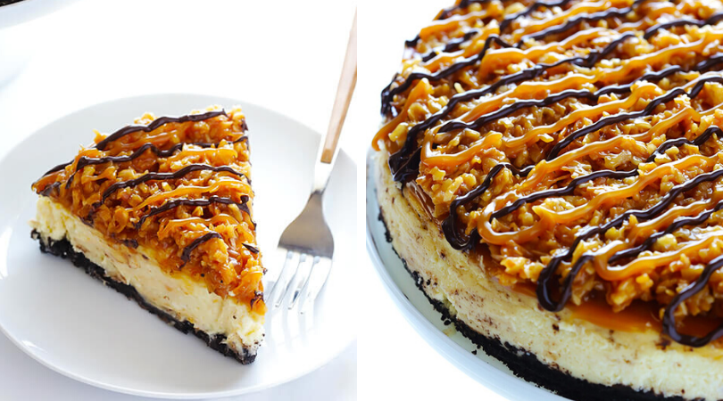

This Samoa Cheesecake recipe is inspired by the famous Girl Scout cookies (a.k.a. “Caramel Delights”). It’s a simple vanilla cheesecake base, made with an Oreo crust, and topped with caramel, toasted coconut and drizzled with chocolate.
24 Oreo cookies
4 Tablespoons melted butter
pinch of salt
3 (8-ounce) bricks neufchatel (low-fat) cream cheese, softened
1 cup granulated sugar
1 cup plain or vanilla Greek yogurt
2 tsp. vanilla extract, store-bought or homemade
3 eggs
2 cups shredded sweetened coconut
1 3/4 cups caramel dip or sauce (you can either buy the 16-ounce store-bought tubs of caramel dip, or use 1 3/4 cups homemade caramel sauce)
4 ounces dark chocolate
Preheat oven to 325°F, and grease a 9-inch springform pan. Carefully wrap the outside of the pan in 2 layers of heavy-duty aluminum foil, being sure that there are NO gaps where water could seep through.
Add Oreo cookies to the bowl of a food processor, and process until completely crumbled. (Or you can do this step by hand by crushing Oreos with a meat mallet inside a ziplock freezer bag.) Add in the melted butter, and stir or process until evenly mixed with the Oreos. Press the Oreo mixture evenly into the bottom of the springform pan. Then place the pan in a large roasting dish (or any pan larger than the springform), and bring a tea kettle or pot of water to boil in preparation for the water bath. Set aside. (*If you don’t want to place the pan directly in a water bath, you can skip this last step and just place a pan of water on the shelf beneath the cheesecake pan.)
Using an electric mixer, beat cream cheese on medium speed for 3 minutes until smooth. Add sugar and beat for an additional minute until well blended. Add Greek yogurt and vanilla, and beat for an additional minute, stopping partway to scrape the bottom of the bowl with a spatula. Add eggs, one at a time, beating on low speed after each addition just until blended. Do not overbeat! Pour into crust.
Place the double pans in the oven on a shelf on the bottom third of the oven. Very carefully use a tea kettle (or large measuring cup) to pour the boiling water in the larger pan to form a water bath around the springform, so that it comes up about 1-inch around the springform.
Close the oven door, and bake about 1 hour 30 min, or until center is almost set. (The cake should still jiggle ever so slightly.) Turn oven off, and open oven door slightly. Let cheesecake set in oven 1 hour. Then remove cheesecake from oven, carefully run a knife around the edges of the cake, and then let cool to room temperature. Refrigerate at least 4 hours or overnight. Remove springform rim, and top cheesecake with Samoa topping. Return the cheesecake to the refrigerator for at least 15 minutes for the topping to set. Then serve, or cover and refrigerate for up to 5 days.
This website makes it really easy to reference ingredient quantities while following the instructions. I find that recipe websites often list the ingredients before or after the instructions, but the side-by-side on this website allows the viewer to see both at the same time. It also has a very clear visual hierarchy that makes navigation easy.
JamieOliverThis website has a nice overview of the nutritional aspects of each recipe clearly displayed at the top of the page. It also includes a section of possible substitutions that is clearly shown at the bottom of the recipe using a design language that would make it difficult for a user to overlook.
Simply RecipesThis website integrates photos throughout the recipe for the user to follow along with. Rather than only showing final photos, each step of the instructions is accompanied by a picture so the viewer can easily understand the next set of instructions.
This website has a really engaging layout that combines small bits of text and images in a nice way. The interactive elements with some of the photos is also a subtle way of allowing the user to enlarge photos and dive more into the website.
My DrinkThis website handles lots of small chunks of text well. It has broken down the content into small manageable pieces and also done a good job combining those with images. The animated illustrations would also be a nice touch for a more advanced recipe website as they could give little demos of the instructions.
The Bold Type HotelThis website's home page has a nice moment of image and introductory text. It could translate well to a recipe with a photo of the finished food along with the name and source of the recipe.